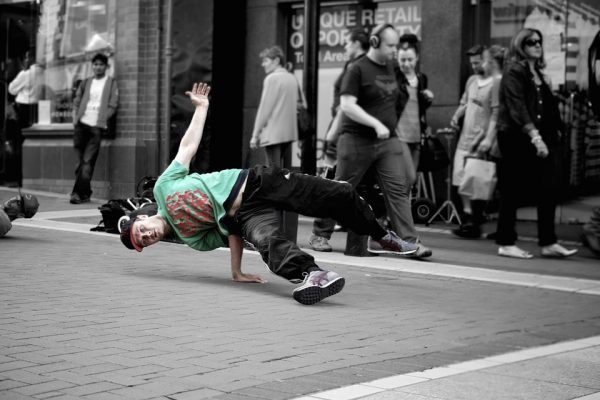

INICIO |
MODA CALLEJERA |
CALZADO |
MODA CALLEJERA
La moda callejera es la moda que se considera que surgió no de los estudios, sino de la moda urbana de base . La moda callejera se asocia generalmente con la cultura juvenil , y se ve con mayor frecuencia en los principales centros urbanos. Revistas y periódicos como el New York Times y Elle comúnmente presentan fotografías sinceras de personas que usan ropa urbana y elegante. La moda urbana japonesa sostiene múltiples movimientos simultáneos de moda muy diversos en cualquier momento dado. La moda convencional a menudo se apropia de las tendencias de la moda callejera como influencias. Hoy en día, la moda callejera se está volviendo cada vez más popular. Más importanteLas subculturas juveniles han tenido una moda callejera asociada. Los ejemplos de las décadas de 1950 , 1970 , 1980 , 1990 , 2000 y 2010.
ROPA DE CALLE
Es un estilo de ropa casual que se convirtió en global en la década de 1990. Creció a partir de la cultura del skate surf de California y, finalmente, de la moda hip hop de Nueva York para abarcar elementos de ropa deportiva , punk y moda callejera japonesa . Finalmente, la alta costura se convirtió en una influencia. Comúnmente se centra en "prendas casuales y cómodas, como jeans , camisetas , gorras de béisbol y zapatillas de deporte ", y exclusividad a través de la escasez intencional de productos. Los entusiastas siguen particularmarcas y tratar de obtener lanzamientos de edición limitada.
El estilo Streetwear se acepta generalmente como nacido de la cultura del surf de Los Ángeles y, más tarde, de la cultura hip hop de la ciudad de Nueva York de fines de los años setenta y principios de los ochenta.
Los comienzos de la moda urbana en los años setenta y ochenta también se inspiraron en la estética DIY del punk, la moda callejera japonesa, la nueva ola , el heavy metal y el hip hop , y eligieron marcas de ropa deportiva y de trabajo tradicionales como Schott NYC , Dr. Martens , Kangol. , Fila y Adidas .
A fines de la década de 1980, el diseñador de tablas de surf Shawn Stussy comenzó a vender camisetas impresas con la misma marca registrada que colocó en sus tablas de surf personalizadas . Inicialmente vendiendo los artículos de su propio automóvil, Stussy expandió las ventas a boutiques una vez que la popularidad aumentó. Luego, cuando las ventas alcanzaron su punto máximo, Stüssy se mudó a ventas exclusivas para crear escasez de productos, lo que reafirmó la definición de línea de base definitiva de ropa de calle: camisetas y exclusividad ".
VOLVER ARRIBA |